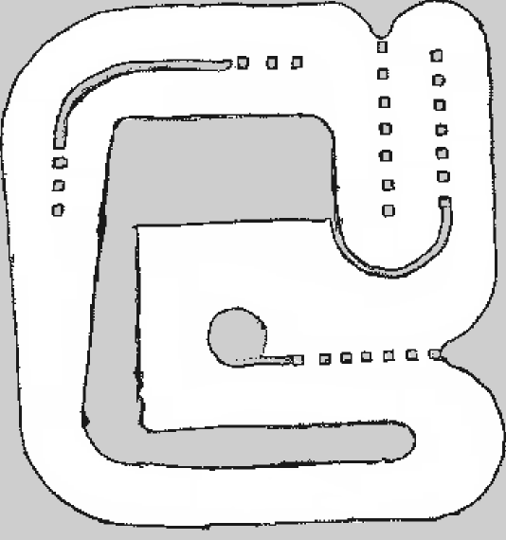
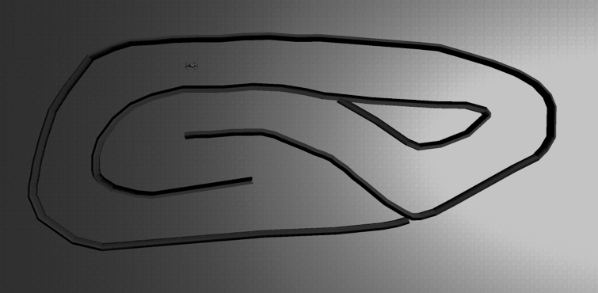

Drive fast. Don’t crash.
Write the software that drives a 1/10-scale racing car around a circuit it has never seen, as fast as it can, without hitting anything. Two tracks, two simulators, one problem.
Registration closes 24 September 2026, 23:59 SGT. One form per team — you can start reading, and building, before you send it.
Choose your track
Two tracks, two simulators, one problem: get round the circuit faster than everyone else without touching anything. Each track has its own branch and its own guide.
RoboRacer Autonomous Racing
Everything in one repository — simulator, judging environment and every official track. No driver ships: you pick the algorithm and write it. Ask the car for a speed and a steering angle; the sim closes the loop for you.

RoboRacer Sim Racing on AutoDRIVE
The compete phase of the RoboRacer Sim Racing League at ICRA 2026 — same vehicle, same sensors, same circuit the ICRA teams raced. You publish raw throttle, so the speed controller is yours to write.

The slides
Every slide from the info talk on 17 September 2026 — who DeepSpeed are, what we race, the rules, the scoring, and what happens between your submission and an offer. Read them here, or take the file with you.
The same for both
Whichever track you take, these do not change. The full rules live in chapter 6 of your track’s guide and they are what counts.
Inside the guide
Seven chapters, written per track. Jump straight to the chapter you need on either side.
Start here
Clone once, check out the branch for your track, then follow chapter 1. Register your team by 24 September 2026, 23:59 SGT; submissions close 18 October 2026, 23:59 SGT.
git clone --recurse-submodules \ https://github.com/NTUDeepSpeed/Recruitment_Hackathon_2627.git cd Recruitment_Hackathon_2627 git checkout track1 ./install/linuxmacoswindows/setup.sh # builds the image, once ./install/linuxmacoswindows/run.sh # builds, then drops you in
git clone \ https://github.com/NTUDeepSpeed/Recruitment_Hackathon_2627.git cd Recruitment_Hackathon_2627 git checkout track2 ./scripts/fetch_simulator.sh # 140 MB, once ./install/linuxmacoswindows/setup.sh # builds the image, once ./install/linuxmacoswindows/run.sh # builds, then drops you in